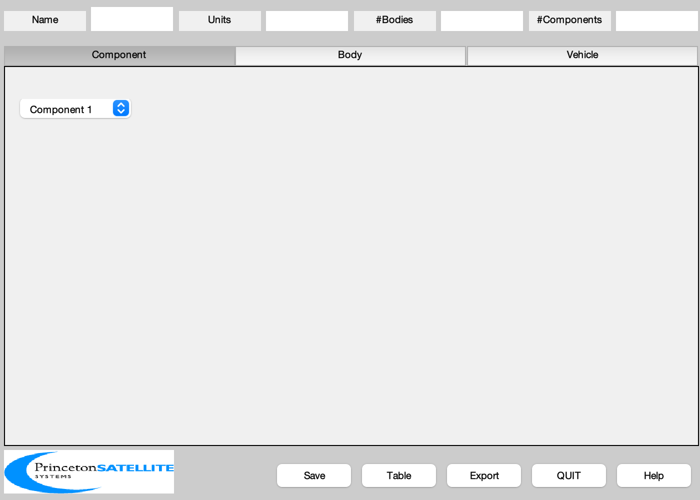
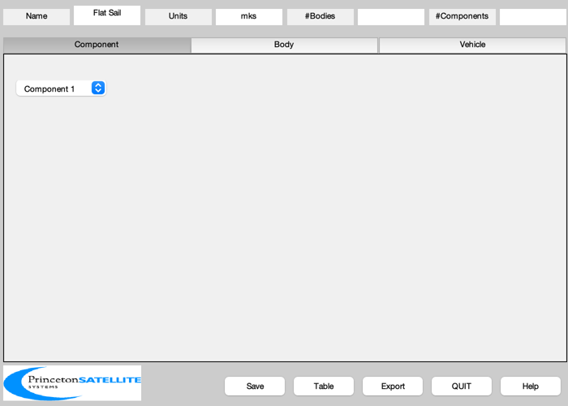
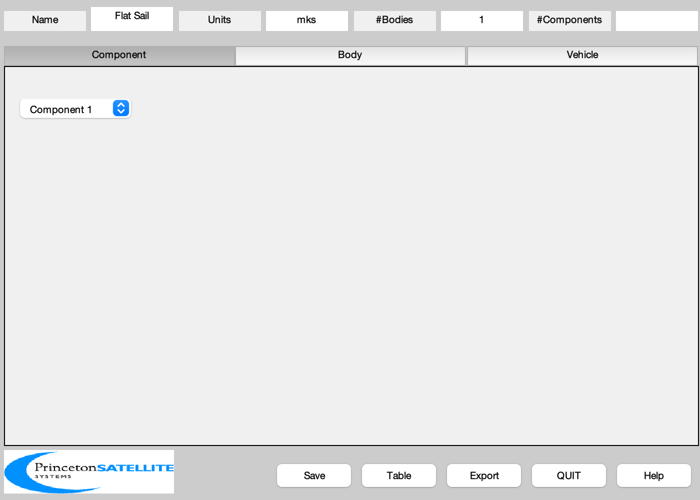
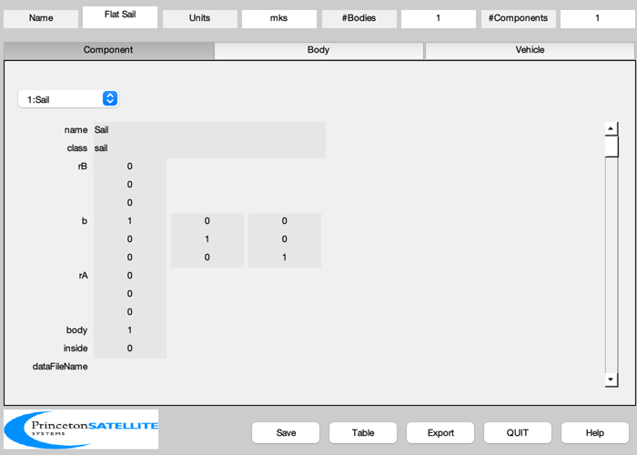
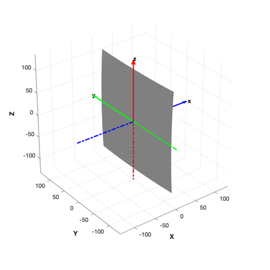

A billowed, square, nonideal sail in the Y/Z plane.
This model assumes the sail is attached to the booms only at the corners, so that the maximum billow due to solar pressure is in the center. The sail front is along +X in the body frame.
------------------------------------------------------------------------ Reference: Heaton. Solar Sail GN&C Model Comparisons. AIAA Guidance, Navigation, and Control Conference (2004) pp. 12 ------------------------------------------------------------------------ See also SailMesh, HRakoczy, OpticalMcInnesToPSS, BuildCADModel, CreateBody, CreateComponent, DrawSCPlanPlugIn, Inertias, FindDirectory, SaveStructure, AddAxes ------------------------------------------------------------------------
Contents
%-------------------------------------------------------------------------- % Copyright (c) 2009 Princeton Satellite Systems, Inc. % All rights reserved. %-------------------------------------------------------------------------- % Since version 7. %--------------------------------------------------------------------------
Script control
%---------------
createFiles = 1;
Properties
%----------- sailWidth = sqrt(50000); % m sailMass = 100.0; % kg
Create the sail mass structure
%------------------------------- inertiaSail = Inertias( sailMass, [sailWidth sailWidth], 'plate', 1 ); bXToZ = [0 0 -1;0 1 0;1 0 0]; massSail = struct('inertia', bXToZ*inertiaSail*bXToZ', 'mass', sailMass, 'cM', [0;0;0] );
Initialize
%----------- BuildCADModel( 'initialize' );
Add general properties
%----------------------- BuildCADModel( 'set name' , 'Flat Sail' ); BuildCADModel( 'set units', 'mks' ); %------------------------------------------------------------------
Create CAD bodies first
%------------------------------------------------------------------
Core
%----- m = CreateBody( 'make', 'name', 'Core' ); BuildCADModel('add body', m );
This creates the connections between the bodies
%------------------------------------------------ BuildCADModel( 'compute paths' ); %------------------------------------------------------------------
Create CAD Components second
%------------------------------------------------------------------
Sail
%----- d = struct( 'p',0.03,'L',sailWidth/sqrt(2) ); [v, f] = SailMesh( [0.5 -0.5 -0.5 0.5]*sailWidth, [0.5 0.5 -0.5 -0.5]*sailWidth, @HRakoczy, d, 4 ); % Rearrange vertices so sail is in the Y/Z plane of the body frame v = v(:,[3 1 2]); r = 0.88; s = 0.94; [rhoS, rhoD, rhoA] = OpticalMcInnesToPSS( r, s ); m = CreateComponent( 'make', 'sail','name','Sail','body',1,... 'mass', massSail, 'faceColor', 'mirror','rA',[0;0;0],... 'sigmaS', [rhoS rhoS], 'sigmaD', [rhoD rhoD], 'sigmaA', [rhoA rhoA],... 'sigmaRS', [0.0 0.0], 'sigmaRD', [0.0 0.0], 'sigmaRA', [1 1],... 'emissivity', [0.05, 0.55],... 'nonLambertian',[0.79 0.55],... 'vertex',v ,'face', f, 'inside', 0 ); BuildCADModel( 'add component', m ); g = BuildCADModel( 'get cad model' ); %------------------------------------------------------------------
Export
%------------------------------------------------------------------ if( createFiles ) dataDir = FindDirectory('SailData'); SaveStructure( g, fullfile(dataDir,'BillowedSquareSail') ); end
3D View
%-------- DrawSCPlanPlugIn('initialize',g); AddAxes(0.6*sailWidth,[],[],gcf) light('position',[1;0;0]) %-------------------------------------- % PSS internal file version information %--------------------------------------
ans =
Figure (2: 3D Vehicle Plan) with properties:
Number: 2
Name: '3D Vehicle Plan'
Color: [1 1 1]
Position: [500 470 460 460]
Units: 'pixels'
Use GET to show all properties
